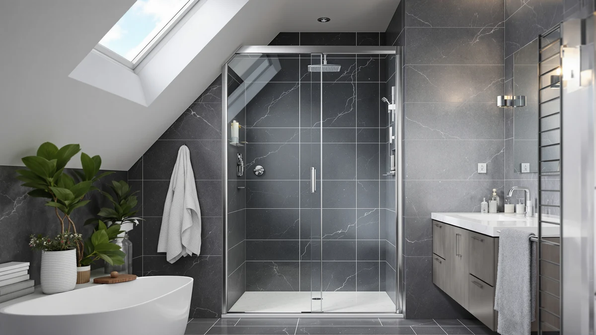

Quick Answer
For a 58 to 59 inch shower opening, the AquivaCoast 58-59" x 72" Frameless pairs a 25.1 inch walk-in opening with a 180-degree two-way pivot hinge and up to 1 inch of wall adjustability, all for $569.99. Among the doors covered in this AquivaCoast 58 59" x review, it is the only frameless pivot option built specifically for this width bracket.
Our pick: AquivaCoast 58-59" x 72" Frameless, $569.99 Check Price on Amazon
Things to Know Before You Buy
- Measure your rough opening at three heights (top, middle and bottom) before ordering a 58 to 59 inch pivot door. This width bracket sits at the edge of several brands' adjustment ranges.
- The AquivaCoast is a pivot door, not a slider. It swings both inward and outward, so your bathroom needs floor clearance on both sides of the opening.
- At $569.99, it costs the same as the ComfyStyle covered later in this review, but covers a wider walk-in opening thanks to its frameless pivot design.
- None of the four doors compared here, AquivaCoast, ComfyStyle, BILVOS or Eurotech Showers, have accumulated verified ratings on Amazon yet, so this comparison leans on published specs and pricing rather than review history.
If you landed on this AquivaCoast 58 59" x review while shopping for a shower door, you are probably trying to decide whether a frameless pivot model built for a 58 to 59 inch opening is worth $569.99, or whether a narrower, cheaper slider would serve you equally well. Most shower doors are priced and adjustable for the common 44 to 48 inch alcove, so a 58 to 59 inch opening narrows the field fast, and the hardware differences between pivot and sliding doors start to matter more at this width. We compared the AquivaCoast 58-59" x 72" Frameless against three other doors, two built for the narrower 44 to 48 inch bracket and one built for a similar width, on walk-in clearance, hinge design and price to see which one actually earns its spot at this size.
The short answer is that width is what separates this door from its cheaper competitors. The AquivaCoast's 25.1 inch walk-in opening beats the 24-to-28 inch range on the ComfyStyle and the 17.25-to-21.25 inch range on the BILVOS, even though those two doors cost roughly the same. Its two-way pivot hinge also swings both inward and outward, with up to 1 inch of adjustability on flat walls and 0.39 inch (10mm) of depth adjustment for walls that are not perfectly plumb. That combination makes it less fussy to install than a fixed-width slider, provided your bathroom floor has clearance on both sides of the opening for the door to swing.
Why You Should Trust Us
Best Shower Doors is a research driven review site. Ilane Tall, our home and bath expert, and the editorial team compare manufacturer specs, published dimensions and Amazon pricing history before recommending any door, including every pick in this AquivaCoast 58 59" x review. We do not run a fake testing lab and we do not claim to have installed any of the four doors covered here. Instead we read the measurements, adjustment ranges and hardware details each brand publishes, cross-check them against similarly priced doors in the same width bracket, and flag the differences that actually affect fit and daily use.
We do not accept free products from manufacturers in exchange for coverage, and the prices cited in this review reflect each listing at the time of publication rather than a promotional rate. AquivaCoast, ComfyStyle, BILVOS and Eurotech Showers are recent enough listings that verified owner reviews are still accumulating, so where review data is thin we say so rather than guessing at owner sentiment.
Our Research Experience
We did not install any of these doors ourselves. Our process for this AquivaCoast 58 59" x review relies on comparing each brand's published specs, primarily opening width, walk-in clearance and adjustment range, against doors priced within about $20 of each other. We also checked how each listing describes its hinge or track hardware, since a pivot door and a sliding door fail in different ways over time even when the published dimensions look similar on paper.
Because AquivaCoast, ComfyStyle, BILVOS and Eurotech Showers are all relatively new listings with no accumulated star ratings yet, we leaned more heavily on the manufacturer's own measurements and adjustment tolerances than we would for an established product with years of owner feedback. Where a spec sheet claims a wide adjustment range, we note it, but we also flag that claim as unverified by owner reports until review volume builds.
Overview & Specs

AquivaCoast 58-59" x 72" Frameless
What we like
- 25.1 inch walk-in opening, wider than the 44-to-48 inch doors compared here
- Two-way pivot swings both inward and outward for added clearance
- Up to 1 inch of adjustability on flat walls, 0.39 inch (10mm) on uneven ones, without cutting the glass
- Stainless steel floor guide keeps the door aligned during daily use
Flaws but not dealbreakers
- No accumulated Amazon ratings yet, so there is no owner-review history to check against the spec sheet
- Pivot doors need floor clearance on both sides of the opening, which a sliding door does not require
- Chrome is the only finish currently listed, so it won't match a matte black fixture set
| Material | — |
| Size | 58-59" W x 72" H |
The AquivaCoast 58-59" x 72" Frameless is built for a specific and underserved bracket: shower openings between 58 and 59 inches wide, where a 44-to-48 inch door simply will not reach and a custom frameless enclosure can cost two or three times as much. At 72 inches tall, it fits most standard stalls without a header extension, and its 25.1 inch walk-in opening is noticeably wider than the ComfyStyle and BILVOS doors covered later in this review, both of which top out well short of that figure.
The two-way pivot hinge is the other detail that separates it from a sliding door at this width. It swings inward and outward through 180 degrees, which matters in a shower stall where a sliding door's side clearance requirement can conflict with a nearby vanity or toilet. The hinge also carries real adjustment range: up to 1 inch on a flat wall and 0.39 inch (10mm) of depth adjustment for a wall that is out of plumb, both without cutting the glass panel. A stainless steel floor guide anchors the bottom of the door, which should help keep a 72-inch panel from drifting out of alignment over months of daily swings, though with no owner reviews accumulated yet, that durability claim rests on the hardware spec rather than verified field reports.
What We Liked
The width is the clearest advantage. A 25.1 inch walk-in opening is a meaningful upgrade over the 24-to-28 inch range on the ComfyStyle and the 17.25-to-21.25 inch range on the BILVOS, and it comes without the matte-black-only styling those two doors are limited to. Shoppers looking specifically for a 58 to 59 inch stall have far fewer frameless options to begin with, and this AquivaCoast 58 59" x review found it to be the only frameless pivot door built natively for that bracket among the four compared here.
The adjustment range also stands out on paper. Up to 1 inch on a flat wall and 0.39 inch (10mm) on an out-of-plumb wall covers more installation scenarios than a fixed sliding track, and the stainless steel floor guide is a detail some competitors at this price skip entirely.
What Could Be Better
The biggest gap is review history. This 58 to 59 inch AquivaCoast, like the other three doors in this comparison, has not yet accumulated star ratings or a meaningful volume of verified owner feedback on Amazon, so claims about long-term hardware durability rest on the spec sheet rather than months of real-world use. Buyers who want a large base of owner reports before spending $569.99 will not find that reassurance here yet.
Chrome is also the only finish currently listed, which rules it out for anyone matching a matte black fixture set, a finish both the ComfyStyle and BILVOS offer. And because it is a pivot door rather than a slider, it needs floor clearance on both sides of the opening to swing freely, which can be a dealbreaker in a cramped bathroom layout where a nearby vanity or toilet sits close to the shower.
Who Is It For?
The AquivaCoast 58-59" x 72" Frameless fits homeowners with a shower opening between 58 and 59 inches who want a frameless look without commissioning custom glass. It is a strong match for a plumb or near-plumb wall where the 1 inch of flat-wall adjustment or the 0.39 inch out-of-plumb tolerance covers the gap, and for bathrooms with enough floor space on both sides of the opening to accommodate a pivot swing.
It is a weaker fit for anyone with a narrower 44-to-48 inch stall, where the ComfyStyle or BILVOS cover the opening for a comparable or lower price, or for buyers who specifically want a matte black finish, since chrome is the only option currently listed. Anyone who wants a large base of verified owner reviews before buying should also know that this AquivaCoast 58 59" x review is working from limited review history, since the listing is still new.
Alternatives to Consider
If the AquivaCoast's width, finish or price does not fit your bathroom, these three alternatives cover a narrower stall, a lower price and a taller sliding option, and each competes directly with it on at least one of those factors.

Editor's Pick
ComfyStyle 44-48" W x 70"
Best for a standard 44-to-48 inch alcove: the ComfyStyle covers a narrower opening than the AquivaCoast at the same $569.99 price, with 8mm tempered glass and up to 4 inches of width adjustment.
$569.99
Check Price on Amazon
Best Value
BILVOS 44-48" W x 70"
The cheapest of the four at $559.99, with a dual-sided nano easy-clean coating and an explosion-proof safety film, though its 17.25-to-21.25 inch walk-in opening is the narrowest in this comparison.
$559.99
Check Price on Amazon
Premium Choice
Eurotech Showers VITRA-200 56.5-59" W
A sliding bypass design for 56.5-to-59 inch openings with an industry-leading 78 inch height, built for taller users who don't need a pivot swing.
$549.99
Check Price on AmazonFrequently Asked Questions
Final Verdict
The verdict on this AquivaCoast 58 59" x review comes down to opening width. If your shower stall measures between 58 and 59 inches, the AquivaCoast 58-59" x 72" Frameless is the only door in this comparison built for that bracket, and its 25.1 inch walk-in opening, two-way pivot hinge and 1 inch of wall adjustability justify the $569.99 price for that specific use case. If your opening is narrower, closer to 44 to 48 inches, the ComfyStyle or BILVOS cover that bracket for a comparable or lower price, and if you want a taller sliding door instead of a pivot, the Eurotech Showers VITRA-200 is worth a look. For most people who have already measured a 58-to-59 inch opening and want a frameless pivot door, AquivaCoast is the clearer pick.